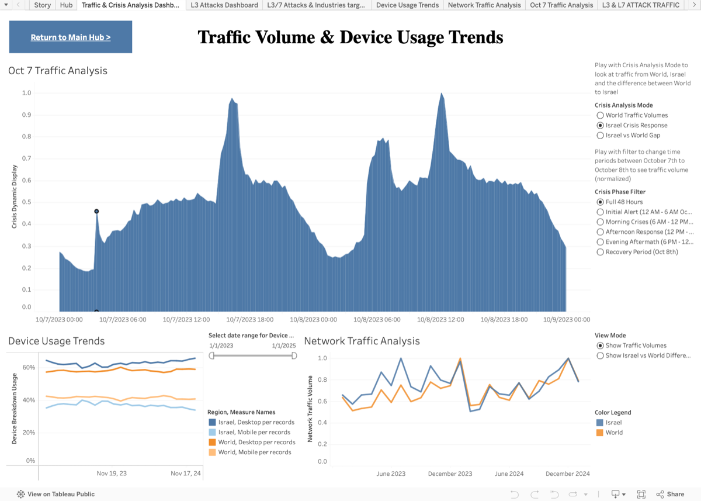
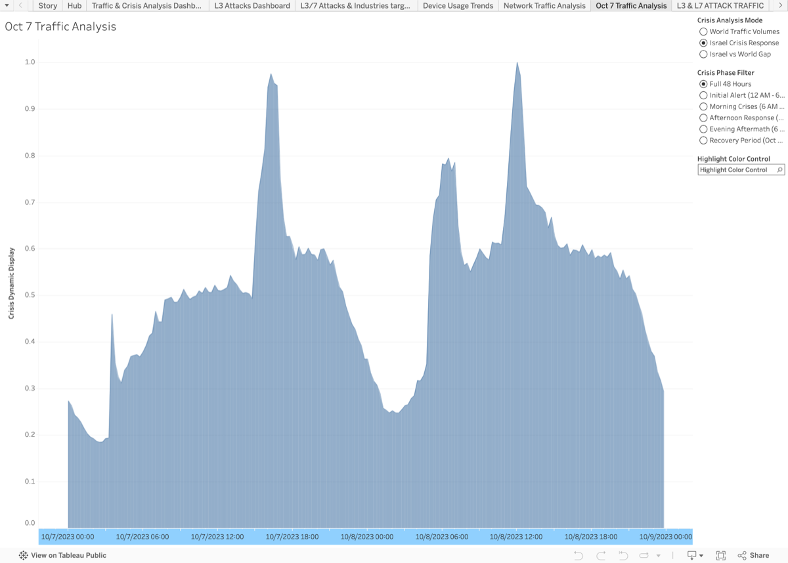
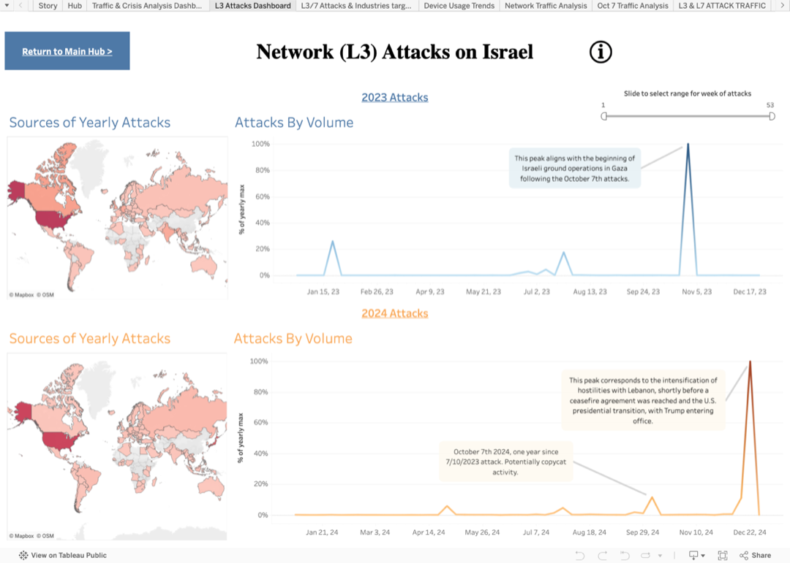
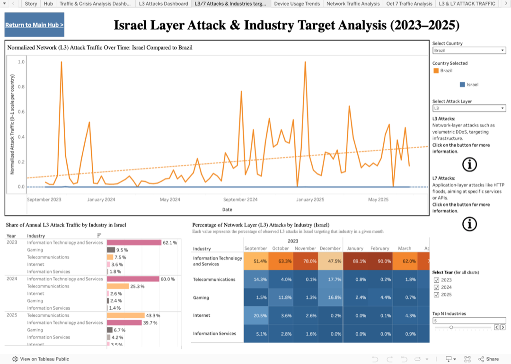

An interactive Tableau dashboard analyzing the impact of the October 7, 2023 events on internet traffic, device usage, and network-layer (L3) cyberattack activity directed at Israel — built for the general public, using familiar charts and plain-language labels.
Loading the interactive Tableau dashboard… If it doesn't appear, your browser or this frame may be blocking embedded content.

Open the full dashboard on Tableau Public ↗This project analyzes how the events of October 7, 2023 affected three things in and around Israel: internet traffic, device usage (desktop vs. mobile), and cyberattack activity — specifically network-layer (L3) attacks. The goal is to make a complex, sensitive subject legible to a general-public audience.
Every design decision serves that audience: we use only familiar chart types (lines, areas, bars, choropleth maps), plain-language labels, and small ⓘ info-buttons that explain technical terms in context — for example, what an “L3 attack” is — so a non-technical reader can follow the story without a glossary.
General public — no networking or security background assumed.
Traffic · device usage · L3 cyberattacks, all tied to Oct 7 2023.
Israel, contextualized against world-wide baselines.
Oct 7 2023 crisis window, plus L3 trends across 2023–2025.
All data comes from Cloudflare Radar, exported as JSON and CSV. Cloudflare’s public API restricts raw byte-volume figures, so the dashboard relies only on relative / normalized measures — percentages and indexed values rather than absolute traffic in bytes.
Three coordinated dashboards, each answering one question.
Structured around Shneiderman’s mantra — overview first, zoom & filter, details on demand — with coordinated multiple views and cross-filtering. We applied the four classic operators: Derive · Manipulate · Facet · Reduce.
Compute new values from the source: raw feeds → normalized percentages and indexed measures, so different regions and metrics are comparable.
Interactive controls: time sliders, map pan/zoom, and linked filters that cross-filter the coordinated views.
Partition the data into views: juxtaposition (side-by-side small multiples) and superimposition (overlaid lines on shared axes).
Manage clutter: aggregate to hourly / weekly buckets and show only the Top-N industries instead of the long tail.
Static captures of each sub-view (click to enlarge) — these also serve as the embed’s preview / fallback.


